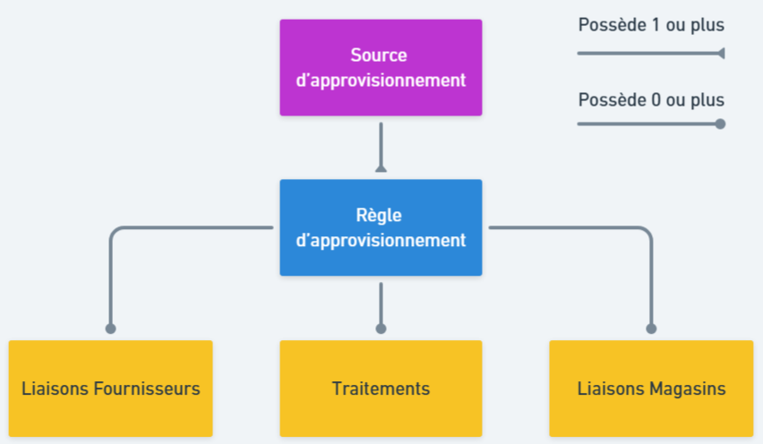

Présentation
Généralités
Définition
Les sources d'approvisionnement servent à définir les stocks alloués à vos différents canaux de ventes qui seront utilisés pour préparer les commandes passées sur ces canaux. Il s'agit d'un module optionnel qui, une fois activé, remplace le calcul simple par un système plus complet permettant de choisir précisément les stocks à utiliser.
L'activation des sources d'approvisionnement est indispensable pour pouvoir utiliser les modules Delivery Optimizer et Unified Stock.
Caractéristiques
Une source d'approvisionnement est associée à une raison juridique. Elle possède les caractéristiques suivantes :
- Un libellé (exemple : Site E-commerce France)
- Une icône à choisir pour l'affichage dans la gestion commerciale
- Des règles d'approvisionnement (voir ci-dessous)
- La possibilité ou non d'être archivé (une source d'approvisionnement archivé n'est pas exécutable)
Si vous souhaite lier la source d'approvisionnement à un module Delivery Optimizer, vous devrez également renseigner :
- L'url du module
- Les identifiants OMS du module
- Les identifiants E-Commerce du module
- La configuration du module
Pour plus d'information sur cette partie, veuillez consulter la documentation sur Delivery Optimizer.
Composition d'une source d'approvisionnement
Comme évoqué ci-dessus, une source d'approvisionnement permet de définir des règles pour savoir quels stocks et quelle part de ces stocks est prise en compte pour chaque article. Ces règles d'approvisionnement sont entièrement paramétrables et vous permettent de gérer finement l'allocation de vos stocks à vos sources d'approvisionnement.
Pour ce faire, les règles peuvent s'appuyer sur des liaisons fournisseurs et magasins ainsi que des traitements. Pour plus d'informations sur les règles d'approvisionnement, consultez la page de documentation qui leur est dédiée.
Le schéma ci-dessous synthétise les relations entre les différentes entités qui composent une source d'approvisionnement :

Association aux canaux de ventes
Afin de déterminer les quantités disponibles pour un canal de vente (site e-commerce, bornes, etc..), celui-ci doit être associé à une source d'approvisionnement. Lorsque cela est fait, le canal déporte tous calculs des stocks à un potentiel module Unified Stock et les calculs de paniers/commandes à un module Delivery Optimizer.
Type d'exécution
Les sources d'approvisionnement peuvent être exécutées dans deux cadres différents :
- Dans la base de données principale. Cette première version des sources d'approvisionnement considère la base comme référentiel des stocks. Cette version ne permet pas de disposer de vos stocks en temps réel.
- Pour Unified Stock. Cette seconde version est utilisée si vous disposez d'un module Unified Stock paramétré. Dans ce cas, Unified Stock est considéré comme référentiel des stocks et permet de bénéficier du calcul de vos stocks en temps réel.
En fonction du cadre d'exécution, le fonctionnement des sources d'approvisionnement diffère légèrement.
Configuration des origines de stocks
Notion d'origine de stock et Ship From Anywhere
Les sources d'approvisionnements sont conçues pour fonctionner avec des stocks provenant de plusieurs type d'entitées. On y retrouve les magasins, les dépôts de stocks, les zones de préparation ou les fournisseurs par exemple.
Cette abstraction nommée Origine de stock est indispensable au fonctionnement du concept Ship From Anywhere (SFA) proposé par Altazion à travers les sources d'approvisionnement, Delivery Optimizer et Unified Stock.
Les sections suivantes comportent des explications sur l'intégration des différents types d'origines de stock aux sources d'approvisionnement.
Participation des magasins
La participation d'un magasin aux sources d'approvisionnement est directement liée à la notion de Ship From Store (SFS). Cette participation ne peut se faire que si les conditions suivantes sont respectées :
- Le magasin doit disposer d'un code
- Il ne doit pas être archivé
- Il doit accepter de participer au SFS : c'est à dire, indiquer sa volonté de participer à l'expédition des commandes depuis son magasin
- Il doit participer au SFS : c'est à dire, effectivement participer. Il est en effet possible de désactiver la participation d'un magasin au SFS pour différentes raisons (taux de préparation non satisfaisant, fermeture temporaire, etc.)
Enfin, chaque magasin participant doit disposer d'une configuration valide nécessaire au bon fonctionnement du SFS :
- La priorité du magasin. Plus celle-ci est importante, plus le magasin sera prioritaire pour le traitement des commandes.
- La capacité de traitement du magasin. Plus cette capacité est importante plus le magasin peut traiter de commandes/paniers.
Pour plus de détail sur le fonctionnement du calcul de répartition des commandes, la capacité et la priorité, consultez la documentation de Delivery Optimizer.
Participation des zones de préparation
Le fonctionnement de la participation des zones de préparations aux sources d'approvisionnements est très similaire à celui des magasins. Dans un premier temps, il est nécessaire d'indiquer si la zone de préparation participe aux sources d'approvisionnement puis de compléter sa configuration en remplissant :
- La priorité de la zone de préparation. Plus celle-ci est importante, plus la zone sera prioritaire pour le traitement des commandes.
- La capacité de traitement de la zone de préparation. Plus cette capacité est importante plus la zone peut traiter de commandes/paniers.
Pour plus de détail sur le fonctionnement du calcul de répartition des commandes, la capacité et la priorité, consultez la documentation de Delivery Optimizer.